Batch 01 · recovered from F:\repod2
The first
drawer.
Seven 747 generations, three Eiffel builds, a deep-space defence game and a small endless runner. Loose pages from a working folder with no root index — recovered, copied and linked as found.
The eleven loose pages here are the extracted models. Their full source trees — Eiffel engines, build scripts, iteration renders, reference scans and research — live in the source vault. Left out of the copy: node_modules/ and the 266 MB _pdf/ library.
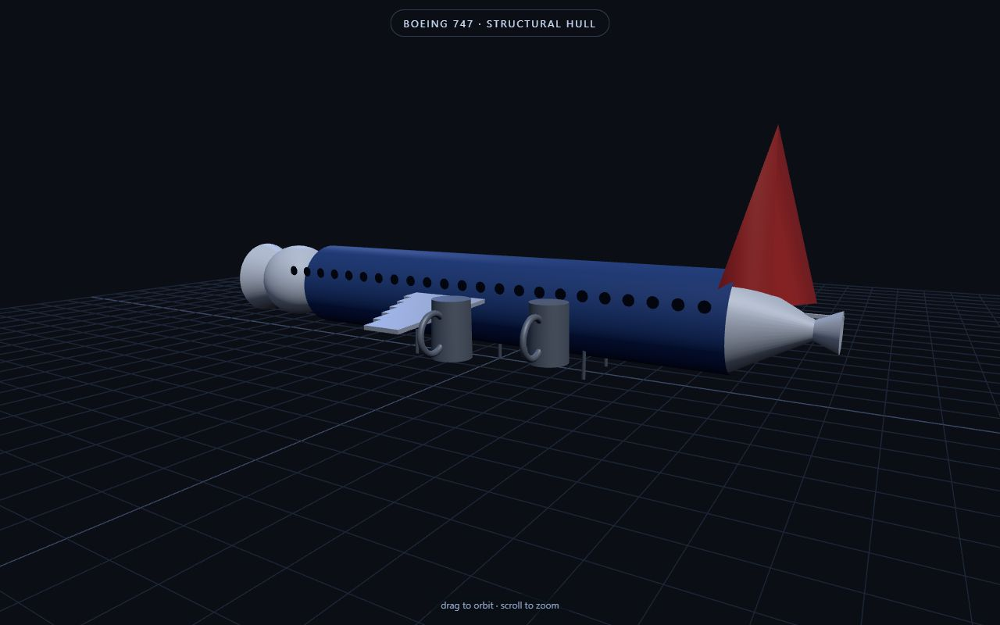
CDN · structural747 — Structural
An early airframe as structure: tube, wing box, tail.
747.html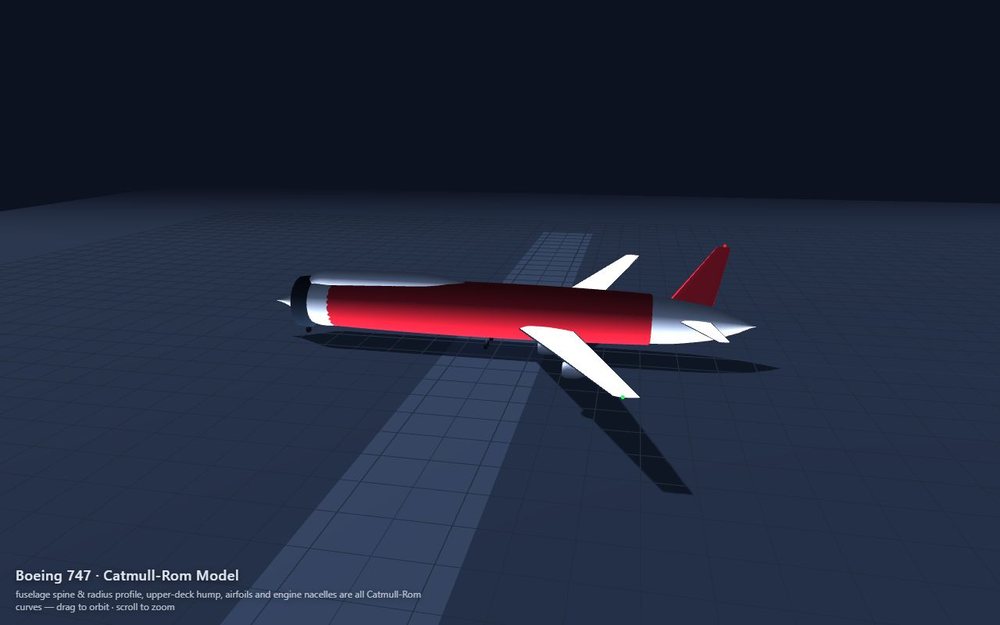
CDN · loft747 — Catmull-Rom
Lofted fuselage and wings from Catmull-Rom curves.
b747-catmull.html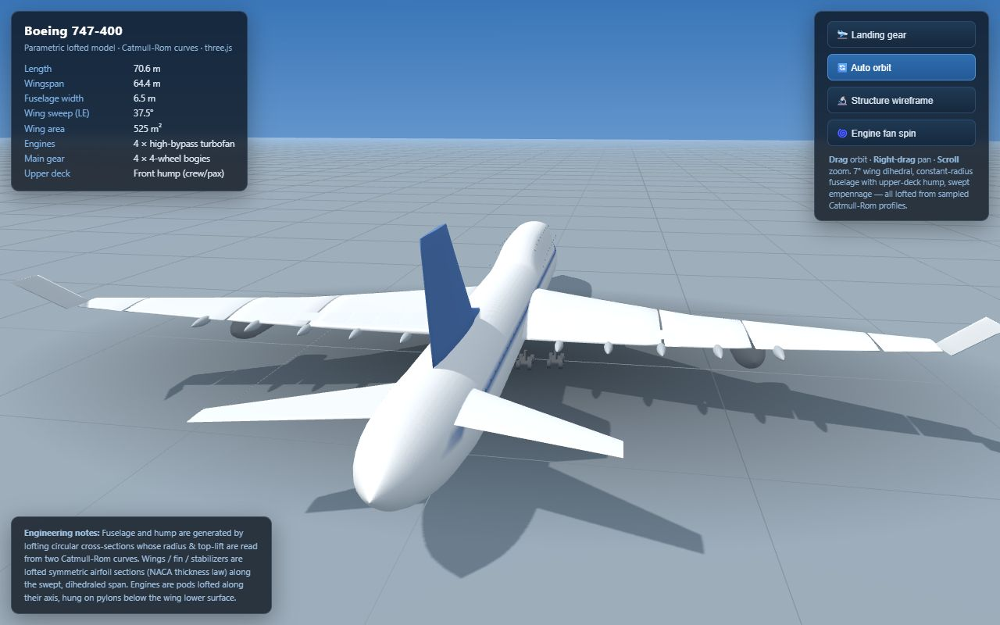
CDN · engineering747 — Engineering Loft
A more measured pass at the same airframe, with panels and callouts.
boeing747-accurate.html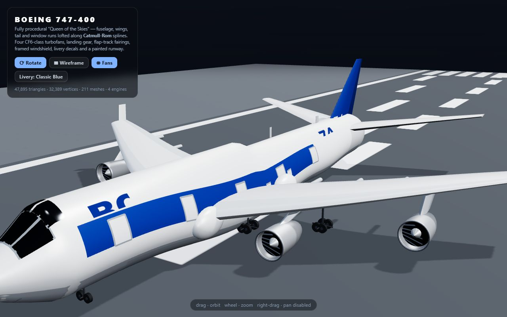
offline · 1.3 MB747-400 — Standalone
The self-contained build: everything embedded, no network needed.
boeing747-standalone.html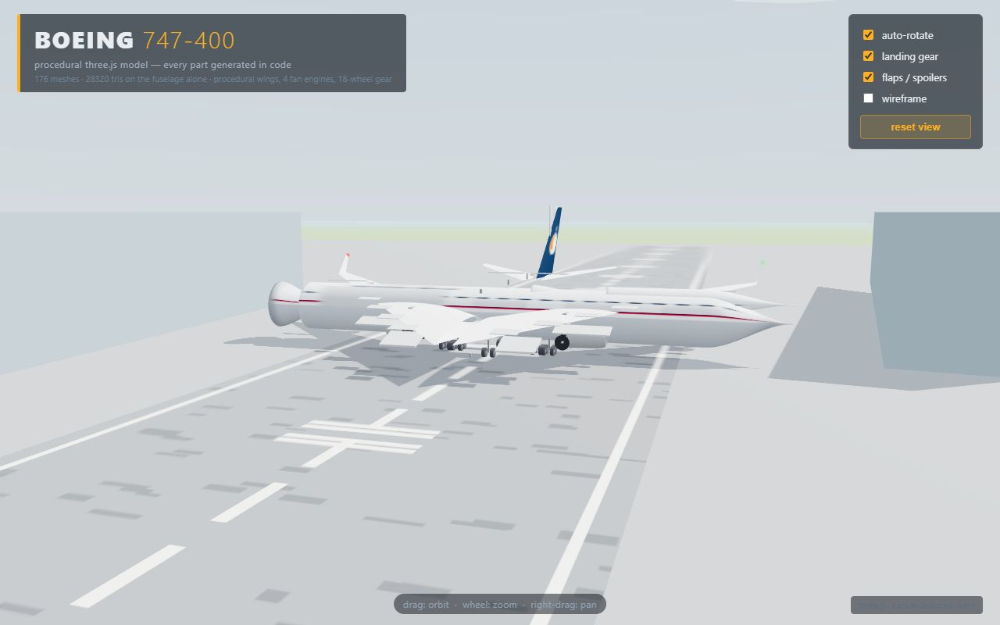
CDN · early747-400 — Procedural
An earlier generation in the line — same silhouette, different code.
boeing747.html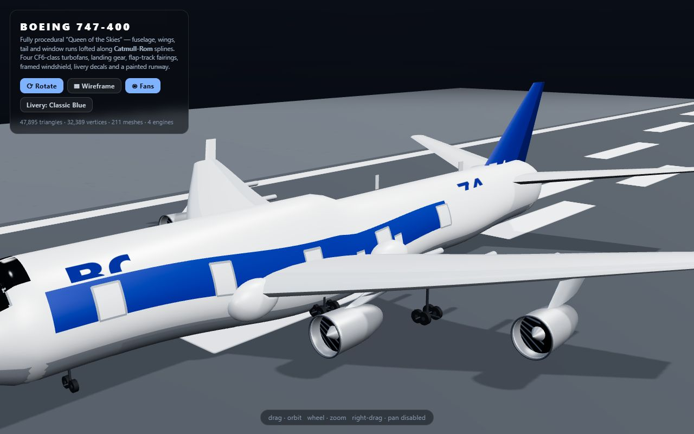
CDN · v2747-400 — V2
The second pass at the loft: house livery, environmental light.
boeing747-v2.html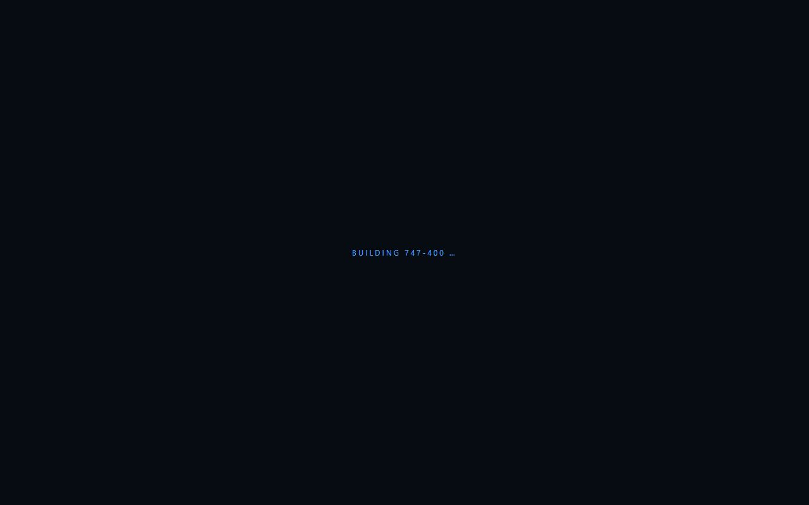
stub · no renderer747-400 — Ultra
A UI shell with the buttons wired to nothing. Kept as a cautionary specimen.
boeing747-ultra.html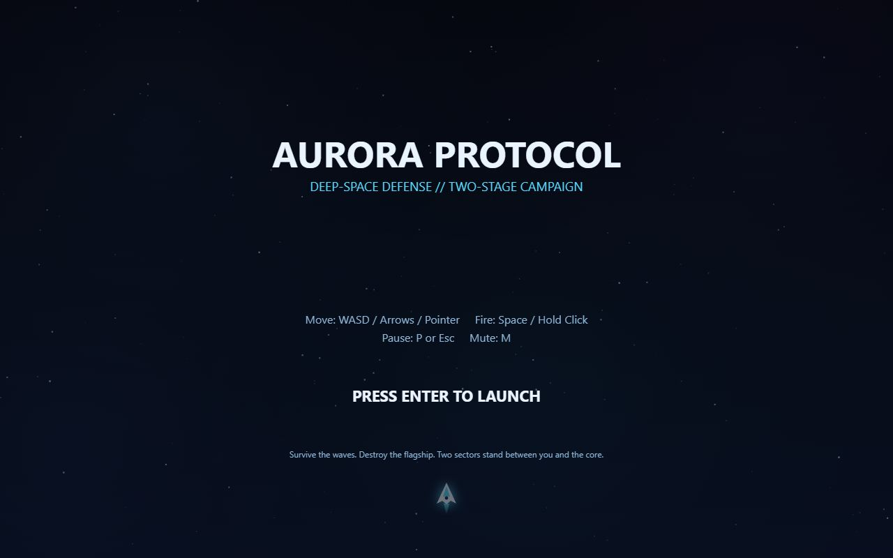
offline · gameAurora Protocol
A deep-space defence game; press Enter to launch.
aurora-protocol.html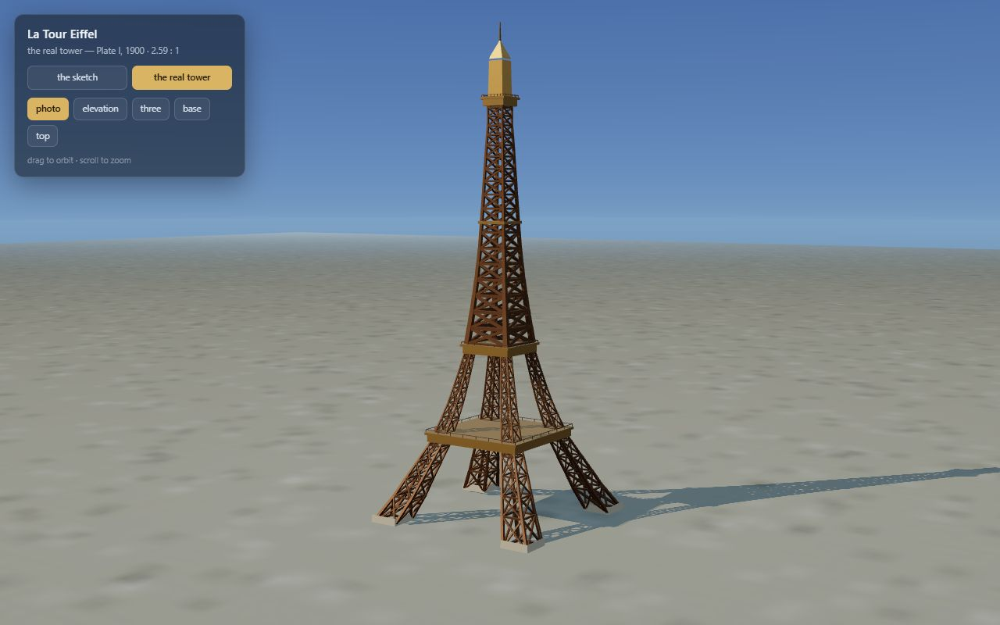
offline · simpleEiffel — Simple
The stripped-back tower study, reduced to silhouette and light.
eiffel-simple.html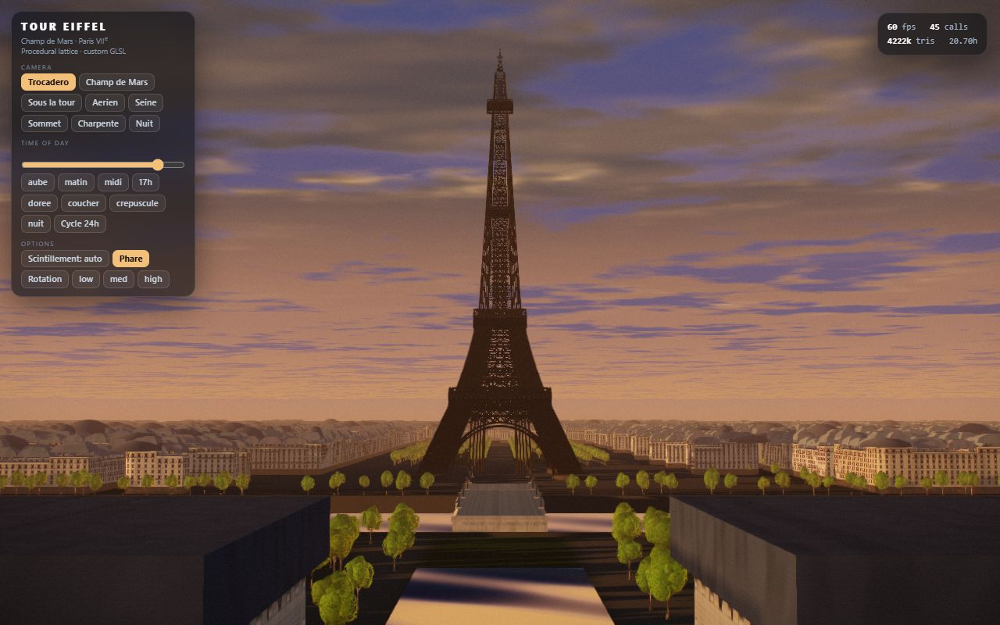
offline · GLSLEiffel — Champ de Mars
A later generation with a shader sky, Paris blocks and the Champ de Mars.
eiffel-tower.html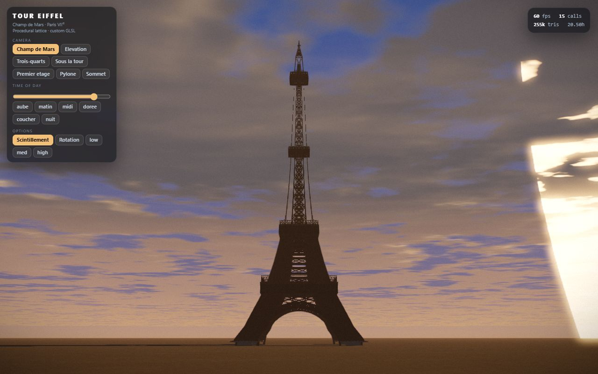
offline · tourTour Eiffel
A cinematic visit to the same Paris, at sunset.
tour-eiffel.html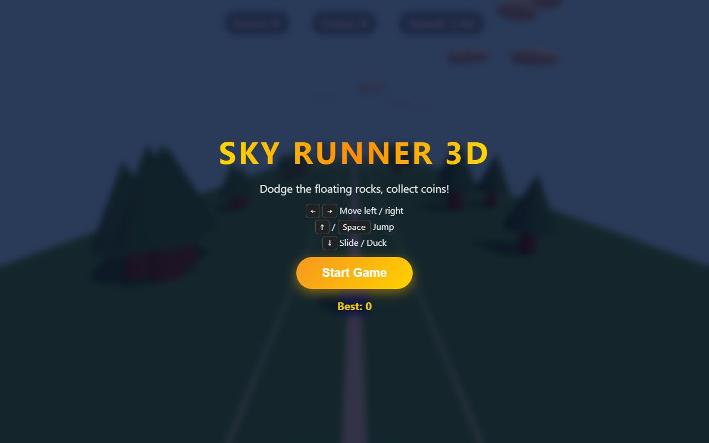
CDN · gameSky Runner 3D
A small endless runner: dodge rocks, collect coins. Press Start.
3d-game/